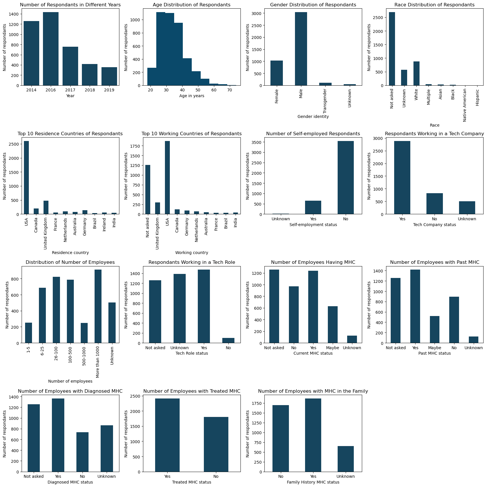
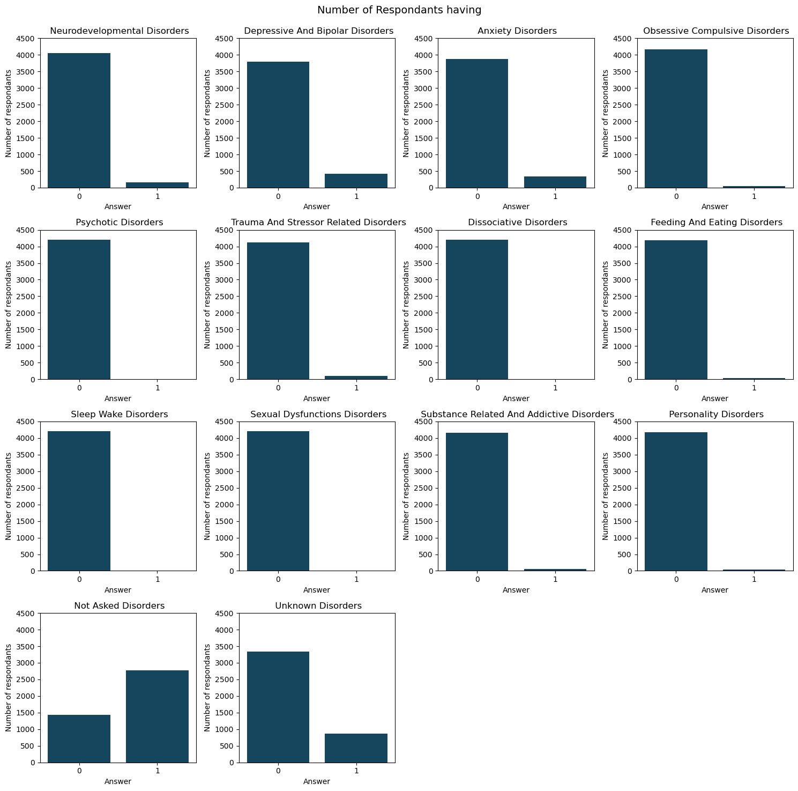
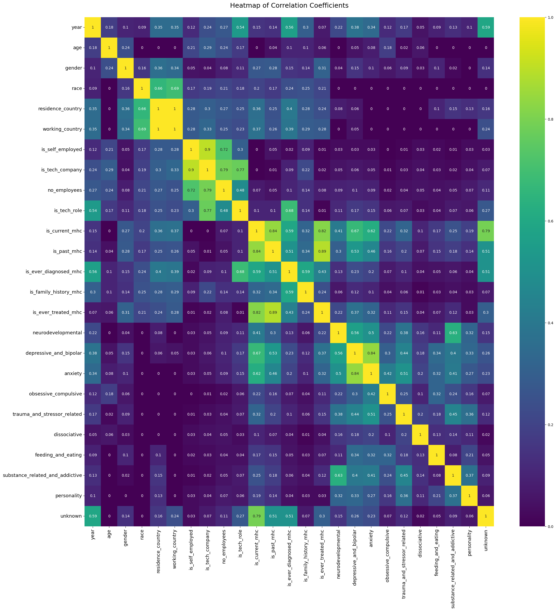
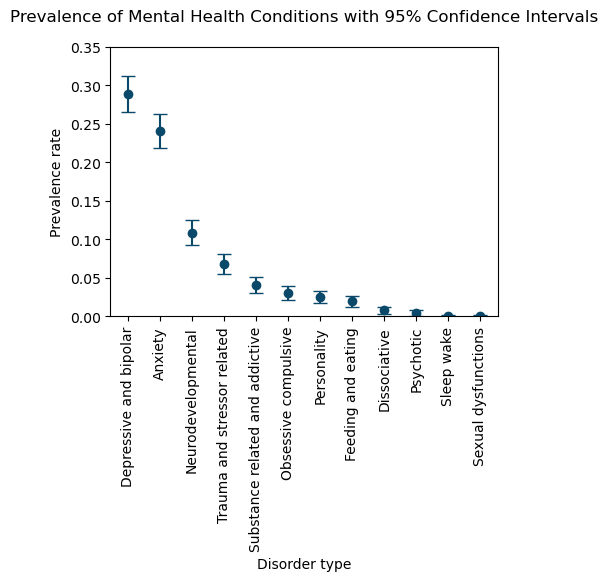

Mental Health Data Analysis
Analyzing survey data on mental health in the tech industry to uncover trends and areas for improvement.
Overview
In this project, I perform data preparation and cleaning, followed by Exploratory Data Analysis (EDA) on mental health trends in the tech industry. The dataset comes from OSMI (shared by Anthony Inthavong on Kaggle) conducted surveys between 2014–2019 targeting mental health perceptions and mental health conditions (MHC) among tech professionals.
Key Highlights
The most commonly reported mental health conditions were:
- Depression and Bipolar Disorders: 28.9%
- Anxiety Disorders: 24.1%
- Neurodevelopmental Disorders: 10.9%
- Survey overview

Figure 1: Overview of the repondants answers.

Figure 2: Overview of the reported MHCs.
- Correlation analyses of features.

Figure 3: PhiK correlation coefficients heatmaps.
- Prevalance rates of different MHCs

Figure 4: Prevalance rates with 95% confidance intervals of different MHCs